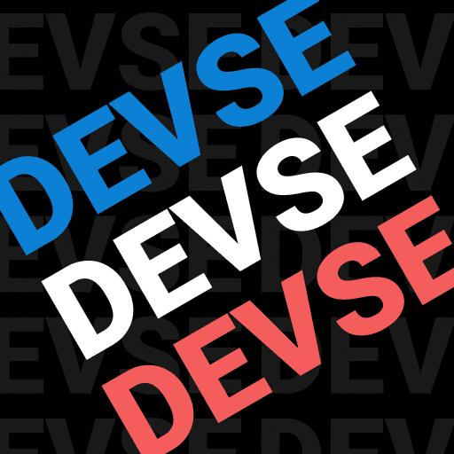

j'ai eu énormément de projet pendant 3 ans (avec quelques projet abandonnés)
dernièrement j'essaye de rendre tout les projet open source sous la license MIT
voici mon compte github :
icidans la liste certains projets sont terminé / abandonnés
la liste est trié du plus récent au plus ancien
documentation devse
la documentation devse (développement de système d'exploitation) est un projet auquel je participe
c'est une documentation française sur le développement de système d'exploitation open source ici :
code source site webfwm (feather window manager)
fwm (feather window manager) est un gestionnaire de fenêtre (tiling, qui essaye d'utiliser le moins possible la souris) linux open source codé en c++
code sourcedevse
je suis fondateur du groupe discord DEVSE (développement de système d'exploitation français)
c'est un groupe discord avec presque 150 membres avec énormément de développeur de systèmes d'exploitations
organisation githubemulateur RISC *terminé*
j'ai créer un émulateur RISC (avec le support de quelque instruction compressé supporté) en c++
RISC est une architecture de processeur qui a pour but d'être une architecture avec peut d'instruction
WingOS
c'est le projet auquel j'ai le plus travaillé, c'est un kernel 64bit qui supporte de multiples choses
WingOS supporte par exemple le multi coeur, les carte réseaux RTL ou e1000 etc
code sourceSup-console *abandonné*
sup console était un terminal disponible et sur windows, et sur linux, qui utilisait lua comme language de "scripting" cependant je l'ai abandonné
il peut quand même faire tourner du code lua, interpréter des commandes basiques etc...
code source